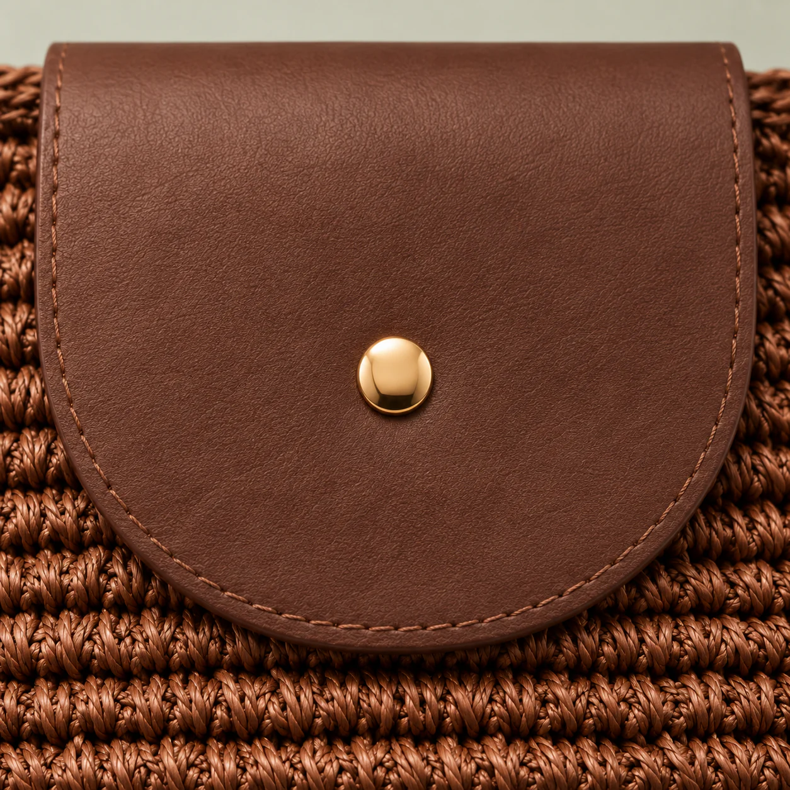
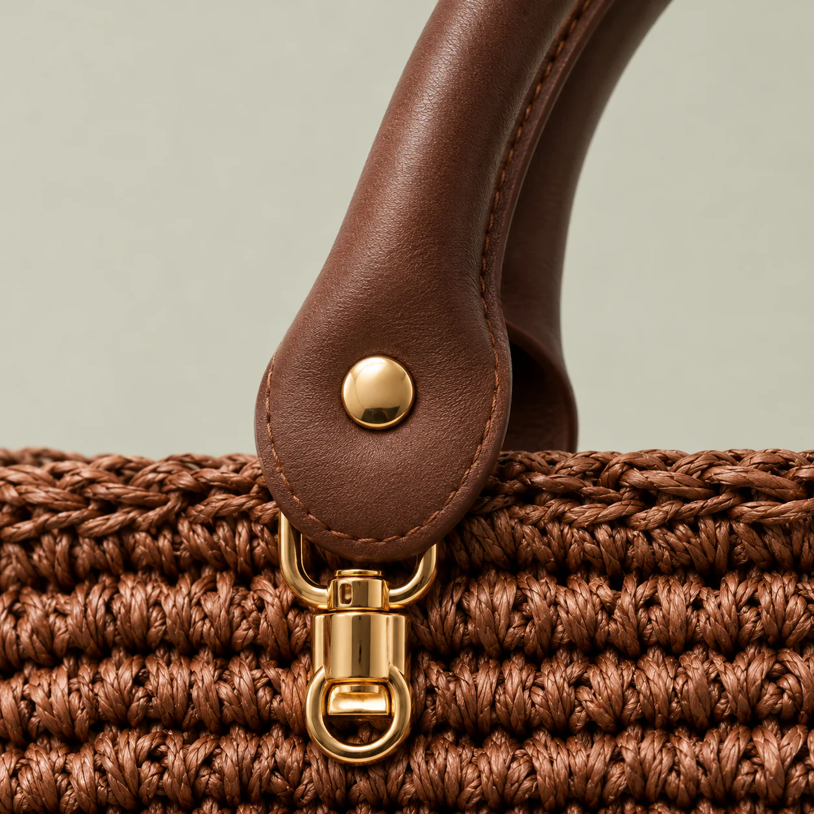
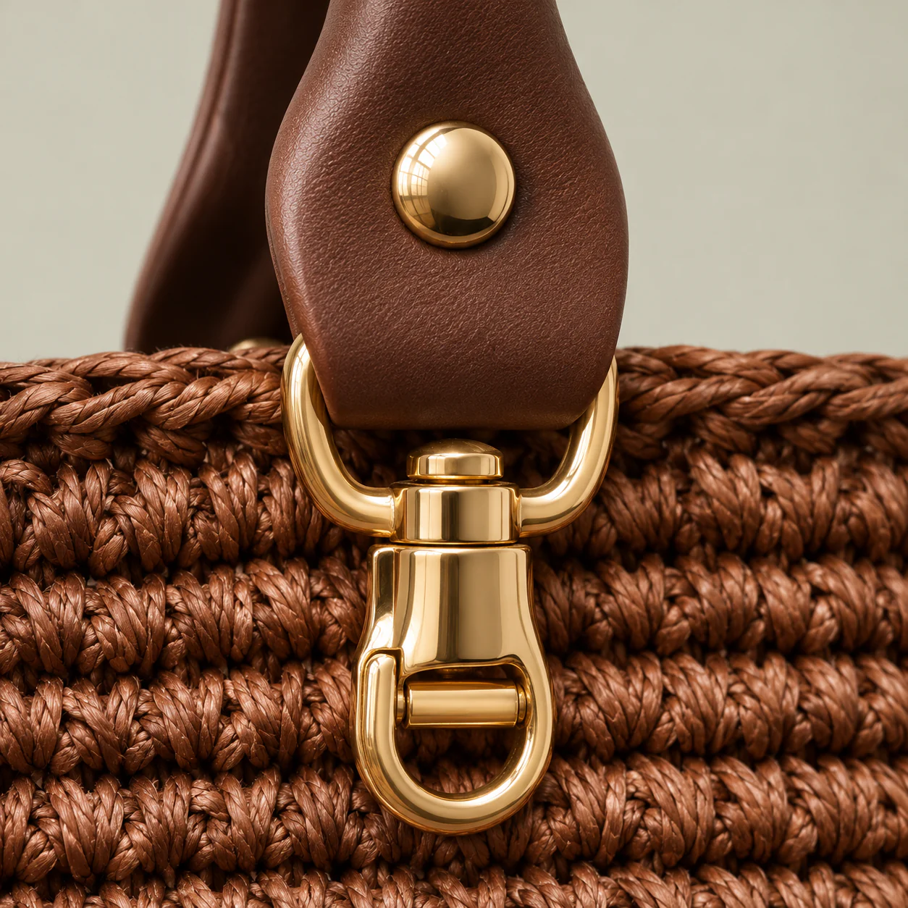
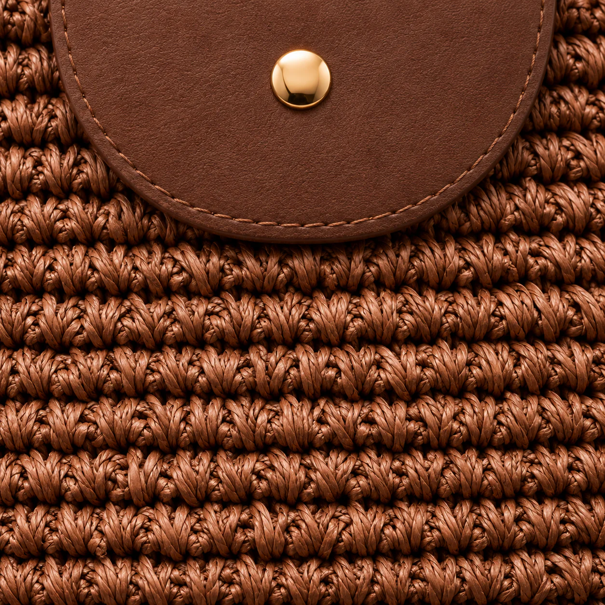

Yelpaze
Yelpaze örgü · Deri püskül
₺2.650





Yakından

Rulo deri, pirinç perçinle sabitlenir.

Döner pirinç; saplar çıkarılabilir.
Kenar dikişli deri, tek çıtçıt.

Sık sıralar, dik duran gövde.

Kullanımda
Kahvaltıdan gün batımına.
Koleksiyondan
Yelpaze örgü · Deri püskül
₺2.650

Çok renkli motif · Örgü sap
₺2.950

Kare motif · Deri saplar
₺2.850